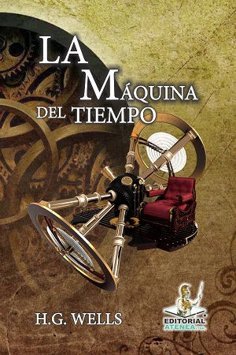
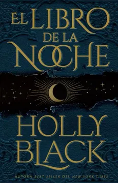
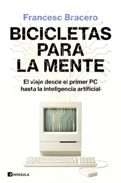
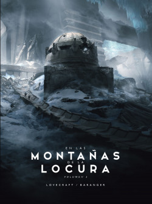
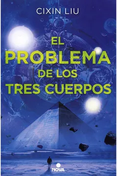
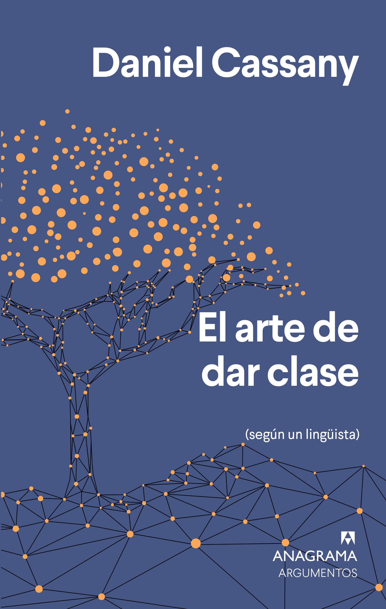
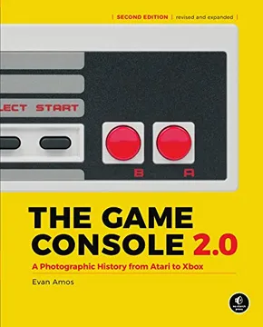

Inicio
Bienvenido a nuestra pagina web, aqui puedes encontrar los mejores libros a los mejores precios!!!
Categorías
Sci_Fi |
Accion |
Fantasia |
Educación |
Tecnologia |
La maquina del tiempo |
Esperando al diluvio |
El Libro De La Noche |
La escuela en la nube: el futuro del aprendizaje
|
Bicicletas para la mente |
En las montañas de la locura |
Revolución |
El Problema De Los Tres Cuerpos |
El arte de dar clase |
Pensar en sistemas |
1984 |
Padre: del seminario al narcotráfico
|
El Bosque De Los Susurros |
Aprendívoros. El cultivo de la curiosidad |
Consolas de Videojuegos 2.0 |
Libro destacado
Consolas de Videojuegos 2.0
Descripcion
En Consolas de Videojuegos 2.0 podremos ver, de manera literal, cómo eran «las tripas» de algunas de las consolas y ordenadores más populares de la historia a lo largo de nueve generaciones de máquinas; desde principios de la década de los 70 hasta la actualidad. Nadie mejor para afrontar este desafío que la persona responsable de la mayoría de las fotografías de sistemas clásicos que encontrarás en Internet. Y es que si realizas una búsqueda sobre tu consola favorita, es muy probable que la primera imagen que aparezca sea una foto realizada por el autor de este libro: el fotógrafo e historiador de videojuegos Evan Amos. Tras dedicar muchos años a catalogar y fotografiar consolas y ordenadores clásicos, Amos decidió reunir su trabajo en un libro, The Game Console, que debuta por fin en España de la mano de Game Press, en una edición 2.0 expandida y traducida al castellano a la que se han incorporado las consolas de novena generación, como Nintendo Switch, PlayStation 5 y Xbox Series X/S, además de más sistemas de las generaciones precedentes. A lo largo de 316 páginas a todo color, Evan Amos refleja la evolución de la industria del videojuego a través de fotografías exclusivas, textos y fichas sobre cada sistema. El libro contempla, además, las diferentes actualizaciones de hardware y diseño que tuvieron algunas plataformas, e incluso varios de sus periféricos. Echa un vistazo al interior de la Magnavox Odyssey, el ZX Spectrum, Vectrex, NES o PlayStation 3, y descubre aparatos menos conocidos como Mattel Aquarius, RDI Halcyon o Super A can. Un libro que no debería faltar en la estantería de cualquier amante de los videojuegos clásicos.
precio $138000 COP
-50% precio $69000 COP